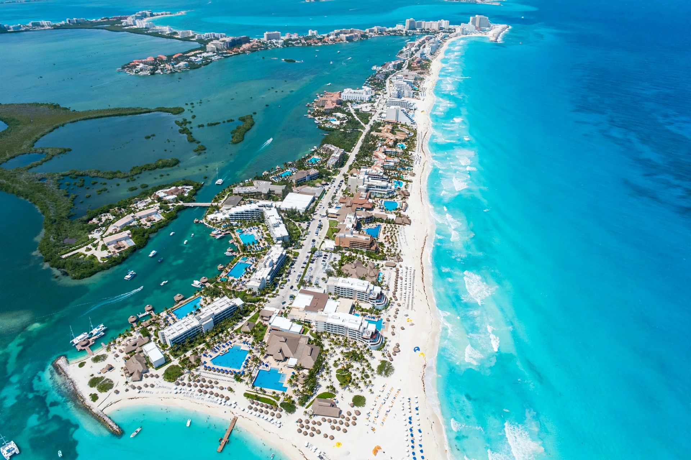

Cancún is a city in southeast Mexico on the northeast coast of the Yucatán Peninsula in the state of Quintana Roo, a world-renowned beach resort destination on the Caribbean Sea.
| Cancún | |
|---|---|
 | |
| Country | Mexico |
| State | Quintana Roo |
| Founded | 20 April 1970 |
| Population | c. 888,000 (2020) |
The site, whose name may derive from Maya Kaank'uun, was a small fishing settlement when the Mexican government and FONATUR in 1970 chose the barrier island — the Zona Hotelera — for a computer-planned tourism megaproject. Construction of hotels, an international airport and the mainland city transformed it into Mexico's most visited resort.
Visitors come for white-sand beaches, diving near the Mesoamerican Reef, nightlife, and day trips to Chichén Itzá, Tulum, Isla Mujeres and cenotes. The city has hosted major events including UN climate talks (COP16, 2010). Hurricanes, notably Wilma (2005), have periodically damaged the resort zone; sargassum seaweed influxes are a recent challenge.
Recreated from memory.